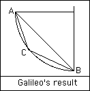

using CalculusWithJulia
using Plots
using SymPy
using Roots49 Euler’s method
This section uses these add-on packages:
The following section takes up the task of numerically approximating solutions to differential equations. Julia has a huge set of state-of-the-art tools for this task starting with the DifferentialEquations package. We don’t use that package in this section, focusing on simpler methods and implementations for pedagogical purposes, but any further exploration should utilize the tools provided therein. A brief introduction to the package follows in an upcoming section.
Consider the differential equation:
\[ y'(x) = y(x) \cdot x, \quad y(1)=1, \]
which can be solved with SymPy:
@syms x, y, u()
D = Differential(x)
x0, y0 = 1, 1
F(y,x) = y*x
dsolve(D(u)(x) - F(u(x), x))
\[
u{\left(x \right)} = C_{1} e^{\frac{x^{2}}{2}}
\]
With the given initial condition, the solution becomes:
out = dsolve(D(u)(x) - F(u(x),x), u(x), ics=Dict(u(x0) => y0))
\[
u{\left(x \right)} = \frac{e^{\frac{x^{2}}{2}}}{e^{\frac{1}{2}}}
\]
Plotting this solution over the slope field
p = plot(legend=false)
vectorfieldplot!((x,y) -> [1, F(x,y)], xlims=(0, 2.5), ylims=(0, 10))
plot!(rhs(out), linewidth=5)we see that the vectors that are drawn seem to be tangent to the graph of the solution. This is no coincidence, the tangent lines to integral curves are in the direction of the slope field.
What if the graph of the solution were not there, could we use this fact to approximately reconstruct the solution?
That is, if we stitched together pieces of the slope field, would we get a curve that was close to the actual answer?
LoadError: MethodError: no method matching conj(::SymFunction{PyCall.PyObject})
[0mClosest candidates are:
[0m conj([91m::Union{Hermitian{T, S}, Symmetric{T, S}} where {T, S}[39m)
[0m[90m @[39m [36mLinearAlgebra[39m [90m/Applications/Julia-1.9.app/Contents/Resources/julia/share/julia/stdlib/v1.9/LinearAlgebra/src/[39m[90m[4msymmetric.jl:368[24m[39m
[0m conj([91m::ChainRulesCore.AbstractThunk[39m)
[0m[90m @[39m [32mChainRulesCore[39m [90m~/.julia/packages/ChainRulesCore/zoCjl/src/tangent_types/[39m[90m[4mthunks.jl:155[24m[39m
[0m conj([91m::Real[39m)
[0m[90m @[39m [90mBase[39m [90m[4mnumber.jl:223[24m[39m
[0m ...The illustration suggests the answer is yes, let’s see. The solution is drawn over \(x\) values \(1\) to \(2\). Let’s try piecing together \(5\) pieces between \(1\) and \(2\) and see what we have.
The slope-field vectors are scaled versions of the vector [1, F(y,x)]. The 1 is the part in the direction of the \(x\) axis, so here we would like that to be \(0.2\) (which is \((2-1)/5\). So our vectors would be 0.2 * [1, F(y,x)]. To allow for generality, we use h in place of the specific value \(0.2\).
Then our first pieces would be the line connecting \((x_0,y_0)\) to
\[ \langle x_0, y_0 \rangle + h \cdot \langle 1, F(y_0, x_0) \rangle. \]
The above uses vector notation to add the piece scaled by \(h\) to the starting point. Rather than continue with that notation, we will use subscripts. Let \(x_1\), \(y_1\) be the postion of the tip of the vector. Then we have:
\[ x_1 = x_0 + h, \quad y_1 = y_0 + h F(y_0, x_0). \]
With this notation, it is easy to see what comes next:
\[ x_2 = x_1 + h, \quad y_2 = y_1 + h F(y_1, x_1). \]
We just shifted the indices forward by \(1\). But graphically what is this? It takes the tip of the first part of our “stitched” together solution, finds the slope filed there ([1, F(y,x)]) and then uses this direction to stitch together one more piece.
Clearly, we can repeat. The \(n\)th piece will end at:
\[ x_{n+1} = x_n + h, \quad y_{n+1} = y_n + h F(y_n, x_n). \]
For our example, we can do some numerics. We want \(h=0.2\) and \(5\) pieces, so values of \(y\) at \(x_0=1, x_1=1.2, x_2=1.4, x_3=1.6, x_4=1.8,\) and \(x_5=2\).
Below we do this in a loop. We have to be a bit careful, as in Julia the vector of zeros we create to store our answers begins indexing at \(1\), and not \(0\).
n=5
h = (2-1)/n
xs = zeros(n+1)
ys = zeros(n+1)
xs[1] = x0 # index is off by 1
ys[1] = y0
for i in 1:n
xs[i + 1] = xs[i] + h
ys[i + 1] = ys[i] + h * F(ys[i], xs[i])
endSo how did we do? Let’s look graphically:
plot(exp(-1/2)*exp(x^2/2), x0, 2)
plot!(xs, ys)Not bad. We wouldn’t expect this to be exact - due to the concavity of the solution, each step is an underestimate. However, we see it is an okay approximation and would likely be better with a smaller \(h\). A topic we pursue in just a bit.
Rather than type in the above command each time, we wrap it all up in a function. The inputs are \(n\), \(a=x_0\), \(b=x_n\), \(y_0\), and, most importantly, \(F\). The output is massaged into a function through a call to linterp, rather than two vectors. The linterp function1 we define below just finds a function that linearly interpolates between the points and is NaN outside of the range of the \(x\) values:
function linterp(xs, ys)
function(x)
((x < xs[1]) || (x > xs[end])) && return NaN
for i in 1:(length(xs) - 1)
if xs[i] <= x < xs[i+1]
l = (x-xs[i]) / (xs[i+1] - xs[i])
return (1-l) * ys[i] + l * ys[i+1]
end
end
ys[end]
end
endlinterp (generic function with 1 method)With that, here is our function to find an approximate solution to \(y'=F(y,x)\) with initial condition:
function euler(F, x0, xn, y0, n)
h = (xn - x0)/n
xs = zeros(n+1)
ys = zeros(n+1)
xs[1] = x0
ys[1] = y0
for i in 1:n
xs[i + 1] = xs[i] + h
ys[i + 1] = ys[i] + h * F(ys[i], xs[i])
end
xs[end] = xn
linterp(xs, ys)
endeuler (generic function with 1 method)With euler, it becomes easy to explore different values.
For example, we thought the solution would look better with a smaller \(h\) (or larger \(n\)). Instead of \(n=5\), let’s try \(n=50\):
u12 = euler(F, 1, 2, 1, 50)
plot(exp(-1/2)*exp(x^2/2), x0, 2)
plot!(u12, x0, 2)It is more work for the computer, but not for us, and clearly a much better approximation to the actual answer is found.
49.1 The Euler method

The name of our function reflects the mathematician associated with the iteration:
\[ x_{n+1} = x_n + h, \quad y_{n+1} = y_n + h \cdot F(y_n, x_n), \]
to approximate a solution to the first-order, ordinary differential equation with initial values: \(y'(x) = F(y,x)\).
The Euler method uses linearization. Each “step” is just an approximation of the function value \(y(x_{n+1})\) with the value from the tangent line tangent to the point \((x_n, y_n)\).
Each step introduces an error. The error in one step is known as the local truncation error and can be shown to be about equal to \(1/2 \cdot h^2 \cdot f''(x_{n})\) assuming \(y\) has \(3\) or more derivatives.
The total error, or more commonly, global truncation error, is the error between the actual answer and the approximate answer at the end of the process. It reflects an accumulation of these local errors. This error is bounded by a constant times \(h\). Since it gets smaller as \(h\) gets smaller in direct proportion, the Euler method is called first order.
Other, somewhat more complicated, methods have global truncation errors that involve higher powers of \(h\) - that is for the same size \(h\), the error is smaller. In analogy is the fact that Riemann sums have error that depends on \(h\), whereas other methods of approximating the integral have smaller errors. For example, Simpson’s rule had error related to \(h^4\). So, the Euler method may not be employed if there is concern about total resources (time, computer, …), it is important for theoretical purposes in a manner similar to the role of the Riemann integral.
In the examples, we will see that for many problems the simple Euler method is satisfactory, but not always so. The task of numerically solving differential equations is not a one-size-fits-all one. In the following, a few different modifications are presented to the basic Euler method, but this just scratches the surface of the topic.
Examples
Example
Consider the initial value problem \(y'(x) = x + y(x)\) with initial condition \(y(0)=1\). This problem can be solved exactly. Here we approximate over \([0,2]\) using Euler’s method.
F(y,x) = x + y
x0, xn, y0 = 0, 2, 1
f = euler(F, x0, xn, y0, 25)
f(xn)10.696950392438632We graphically compare our approximate answer with the exact one:
𝒐ut = dsolve(D(u)(x) - F(u(x),x), u(x), ics = Dict(u(x0) => y0))
plot(rhs(𝒐ut), x0, xn)
plot!(f, x0, xn)From the graph it appears our value for f(xn) will underestimate the actual value of the solution slightly.
Example
The equation \(y'(x) = \sin(x \cdot y)\) is not separable, so need not have an easy solution. The default method will fail. Looking at the available methods with sympy.classify_ode(𝐞qn, u(x)) shows a power series method which can return a power series approximation (a Taylor polynomial). Let’s look at comparing an approximate answer given by the Euler method to that one returned by SymPy.
First, the SymPy solution:
F(y,x) = sin(x*y)
eqn = D(u)(x) - F(u(x), x)
out = dsolve(eqn, hint="1st_power_series")
\[
u{\left(x \right)} = C_{1} + \frac{C_{1} x^{2}}{2} + \frac{C_{1} x^{4} \cdot \left(3 - C_{1}^{2}\right)}{24} + O\left(x^{6}\right)
\]
If we assume \(y(0) = 1\), we can continue:
out1 = dsolve(eqn, u(x), ics=Dict(u(0) => 1), hint="1st_power_series")
\[
u{\left(x \right)} = 1 + \frac{x^{2}}{2} + \frac{x^{4}}{12} + O\left(x^{6}\right)
\]
The approximate value given by the Euler method is
x0, xn, y0 = 0, 2, 1
plot(legend=false)
vectorfieldplot!((x,y) -> [1, F(y,x)], xlims=(x0, xn), ylims=(0,5))
plot!(rhs(out1).removeO(), linewidth=5)
u = euler(F, x0, xn, y0, 10)
plot!(u, linewidth=5)We see that the answer found from using a polynomial series matches that of Euler’s method for a bit, but as time evolves, the approximate solution given by Euler’s method more closely tracks the slope field.
Example
The Brachistochrone problem was posed by Johann Bernoulli in 1696. It asked for the curve between two points for which an object will fall faster along that curve than any other. For an example, a bead sliding on a wire will take a certain amount of time to get from point \(A\) to point \(B\), the time depending on the shape of the wire. Which shape will take the least amount of time?

Restrict our attention to the \(x\)-\(y\) plane, and consider a path, between the point \((0,A)\) and \((B,0)\). Let \(y(x)\) be the distance from \(A\), so \(y(0)=0\) and at the end \(y\) will be \(A\).
Galileo knew the straight line was not the curve, but incorrectly thought the answer was a part of a circle.

AC and then CB will fall faster than one traveling along AB, where C is on the arc of a circle. From the History of Math Archive.This simulation also suggests that a curved path is better than the shorter straight one:
![A Figure]()
The race is on. An illustration of beads falling along a path, as can be seen, some paths are faster than others. The fastest path would follow a cycloid. See Bensky and Moelter for details on simulating a bead on a wire.
Now, the natural question is which path is best? The solution can be reduced to solving this equation for a positive \(C\):
\[ 1 + (y'(x))^2 = \frac{C}{y}, \quad C > 0. \]
Reexpressing, this becomes:
\[ \frac{dy}{dx} = \sqrt{\frac{C-y}{y}}. \]
This is a separable equation and can be solved, but even SymPy has trouble with this integral. However, the result has been known to be a piece of a cycloid since the insightful Jacob Bernoulli used an analogy from light bending to approach the problem. The answer is best described parametrically through:
\[ x(u) = C\cdot u - \frac{C}{2}\sin(2u), \quad y(u) = \frac{C}{2}( 1- \cos(2u)), \quad 0 \leq u \leq U. \]
The values of \(U\) and \(c\) must satisfy \((x(U), y(U)) = (B, A)\).
Rather than pursue this, we will solve it numerically for a fixed value of \(C\) over a fixed interval to see the shape.
The equation can be written in terms of \(y'=F(y,x)\), where
\[ F(y,x) = \sqrt{\frac{C-y}{y}}. \]
But as \(y_0 = 0\), we immediately would have a problem with the first step, as there would be division by \(0\).
This says that for the optimal solution, the bead picks up speed by first sliding straight down before heading off towards \(B\). That’s great for the physics, but runs roughshod over our Euler method, as the first step has an infinity.
For this, we can try the backwards Euler method which uses the slope at \((x_{n+1}, y_{n+1})\), rather than \((x_n, y_n)\). The update step becomes:
\[ y_{n+1} = y_n + h \cdot F(y_{n+1}, x_{n+1}). \]
Seems innocuous, but the value we are trying to find, \(y_{n+1}\), is now on both sides of the equation, so is only implicitly defined. In this code, we use the find_zero function from the Roots package. The caveat is, this function needs a good initial guess, and the one we use below need not be widely applicable.
function back_euler(F, x0, xn, y0, n)
h = (xn - x0)/n
xs = zeros(n+1)
ys = zeros(n+1)
xs[1] = x0
ys[1] = y0
for i in 1:n
xs[i + 1] = xs[i] + h
## solve y[i+1] = y[i] + h * F(y[i+1], x[i+1])
ys[i + 1] = find_zero(y -> ys[i] + h * F(y, xs[i + 1]) - y, ys[i]+h)
end
linterp(xs, ys)
endback_euler (generic function with 1 method)We then have with \(C=1\) over the interval \([0,1.2]\) the following:
F(y, x; C=1) = sqrt(C/y - 1)
x0, xn, y0 = 0, 1.2, 0
cyc = back_euler(F, x0, xn, y0, 50)
plot(x -> 1 - cyc(x), x0, xn)Remember, \(y\) is the displacement from the top, so it is non-negative. Above we flipped the graph to make it look more like expectation. In general, the trajectory may actually dip below the ending point and come back up. The above won’t see this, for as written \(dy/dx \geq 0\), which need not be the case, as the defining equation is in terms of \((dy/dx)^2\), so the derivative could have any sign.
Example: stiff equations
The Euler method is convergent, in that as \(h\) goes to \(0\), the approximate solution will converge to the actual answer. However, this does not say that for a fixed size \(h\), the approximate value will be good. For example, consider the differential equation \(y'(x) = -5y\). This has solution \(y(x)=y_0 e^{-5x}\). However, if we try the Euler method to get an answer over \([0,2]\) with \(h=0.5\) we don’t see this:
F(y,x) = -5y
x0, xn, y0 = 0, 2, 1
u = euler(F, x0, xn, y0, 4) # n =4 => h = 2/4
vectorfieldplot((x,y) -> [1, F(y,x)], xlims=(0, 2), ylims=(-5, 5))
plot!(x -> y0 * exp(-5x), 0, 2, linewidth=5)
plot!(u, 0, 2, linewidth=5)What we see is that the value of \(h\) is too big to capture the decay scale of the solution. A smaller \(h\), can do much better:
u₁ = euler(F, x0, xn, y0, 50) # n=50 => h = 2/50
plot(x -> y0 * exp(-5x), 0, 2)
plot!(u₁, 0, 2)This is an example of a stiff equation. Such equations cause explicit methods like the Euler one problems, as small \(h\)s are needed to good results.
The implicit, backward Euler method does not have this issue, as we can see here:
u₂ = back_euler(F, x0, xn, y0, 4) # n =4 => h = 2/4
vectorfieldplot((x,y) -> [1, F(y,x)], xlims=(0, 2), ylims=(-1, 1))
plot!(x -> y0 * exp(-5x), 0, 2, linewidth=5)
plot!(u₂, 0, 2, linewidth=5)Example: The pendulum
The differential equation describing the simple pendulum is
\[ \theta''(t) = - \frac{g}{l}\sin(\theta(t)). \]
The typical approach to solving for \(\theta(t)\) is to use the small-angle approximation that \(\sin(x) \approx x\), and then the differential equation simplifies to: \(\theta''(t) = -g/l \cdot \theta(t)\), which is easily solved.
Here we try to get an answer numerically. However, the problem, as stated, is not a first order equation due to the \(\theta''(t)\) term. If we let \(u(t) = \theta(t)\) and \(v(t) = \theta'(t)\), then we get two coupled first order equations:
\[ v'(t) = -g/l \cdot \sin(u(t)), \quad u'(t) = v(t). \]
We can try the Euler method here. A simple approach might be this iteration scheme:
\[\begin{align*} x_{n+1} &= x_n + h,\\ u_{n+1} &= u_n + h v_n,\\ v_{n+1} &= v_n - h \cdot g/l \cdot \sin(u_n). \end{align*}\]
Here we need two initial conditions: one for the initial value \(u(t_0)\) and the initial value of \(u'(t_0)\). We have seen if we start at an angle \(a\) and release the bob from rest, so \(u'(0)=0\) we get a sinusoidal answer to the linearized model. What happens here? We let \(a=1\), \(l=5\) and \(g=9.8\):
We write a function to solve this starting from \((x_0, y_0)\) and ending at \(x_n\):
function euler2(x0, xn, y0, yp0, n; g=9.8, l = 5)
xs, us, vs = zeros(n+1), zeros(n+1), zeros(n+1)
xs[1], us[1], vs[1] = x0, y0, yp0
h = (xn - x0)/n
for i = 1:n
xs[i+1] = xs[i] + h
us[i+1] = us[i] + h * vs[i]
vs[i+1] = vs[i] + h * (-g / l) * sin(us[i])
end
linterp(xs, us)
endeuler2 (generic function with 1 method)Let’s take \(a = \pi/4\) as the initial angle, then the approximate solution should be \(\pi/4\cos(\sqrt{g/l}x)\) with period \(T = 2\pi\sqrt{l/g}\). We try first to plot them over 4 periods:
l, g = 5, 9.8
T = 2pi * sqrt(l/g)
x0, xn, y0, yp0 = 0, 4T, pi/4, 0
plot(euler2(x0, xn, y0, yp0, 20), 0, 4T)Something looks terribly amiss. The issue is the step size, \(h\), is too large to capture the oscillations. There are basically only \(5\) steps to capture a full up and down motion. Instead, we try to get \(20\) steps per period so \(n\) must be not \(20\), but \(4 \cdot 20 \cdot T \approx 360\). To this graph, we add the approximate one:
plot(euler2(x0, xn, y0, yp0, 360), 0, 4T)
plot!(x -> pi/4*cos(sqrt(g/l)*x), 0, 4T)Even now, we still see that something seems amiss, though the issue is not as dramatic as before. The oscillatory nature of the pendulum is seen, but in the Euler solution, the amplitude grows, which would necessarily mean energy is being put into the system. A familiar instance of a pendulum would be a child on a swing. Without pumping the legs - putting energy in the system - the height of the swing’s arc will not grow. Though we now have oscillatory motion, this growth indicates the solution is still not quite right. The issue is likely due to each step mildly overcorrecting and resulting in an overall growth. One of the questions pursues this a bit further.
49.2 Questions
Question
Use Euler’s method with \(n=5\) to approximate \(u(1)\) where
\[ u'(x) = x - u(x), \quad u(0) = 1 \]
Question
Consider the equation
\[ y' = x \cdot \sin(y), \quad y(0) = 1. \]
Use Euler’s method with \(n=50\) to find the value of \(y(5)\).
Question
Consider the ordinary differential equation
\[ \frac{dy}{dx} = 1 - 2\frac{y}{x}, \quad y(1) = 0. \]
Use Euler’s method to solve for \(y(2)\) when \(n=50\).
Question
Consider the ordinary differential equation
\[ \frac{dy}{dx} = \frac{y \cdot \log(y)}{x}, \quad y(2) = e. \]
Use Euler’s method to solve for \(y(3)\) when \(n=25\).
Question
Consider the first-order non-linear ODE
\[ y' = y \cdot (1-2x), \quad y(0) = 1. \]
Use Euler’s method with \(n=50\) to approximate the solution \(y\) over \([0,2]\).
What is the value at \(x=1/2\)?
What is the value at \(x=3/2\)?
Question: The pendulum revisited.
The issue with the pendulum’s solution growing in amplitude can be addressed using a modification to the Euler method attributed to Cromer. The fix is to replace the term sin(us[i]) in the line vs[i+1] = vs[i] + h * (-g / l) * sin(us[i]) of the euler2 function with sin(us[i+1]), which uses the updated angular velocity in the \(2\)nd step in place of the value before the step.
Modify the euler2 function to implement the Euler-Cromer method. What do you see?
The
Interpolationspackage handles linear interpolation and much more in an easy to use manner with “exceptional” performance. Thelinterpfunction is for pedagogical purposes only.↩︎